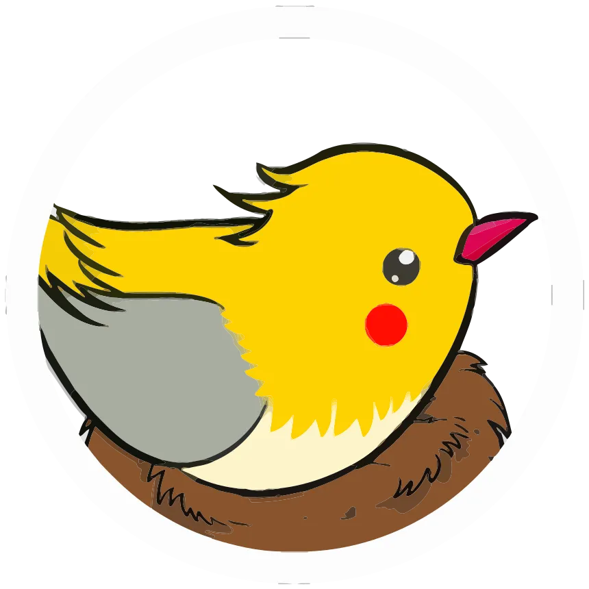

.png)

¿Qué es? PikaOS
PikaOS es una distribución Linux enfocada en gaming, rendimiento y uso diario. Está basada en Debian Sid con paquetes propios, drivers recientes, kernel personalizado y herramientas pensadas para que el sistema quede listo sin perder control avanzado.
¿Por qué esta distro?
A diferencia de una instalación genérica, PikaOS mantiene su propio stack de kernel, gráficos y utilidades. Esto la vuelve una opción fuerte para jugar, crear contenido, manejar drivers GPU y trabajar con un sistema rolling actualizado.
Características principales
Gaming Listo
Incluye herramientas orientadas al juego como Steam, Wine, Gamescope y MangoHud, además de soporte para controladores y una configuración inicial pensada para reducir ajustes manuales.
Base Debian Sid
Usa Debian Sid como base rolling, con paquetes curados, parches propios y software actualizado para equilibrar compatibilidad con novedades del ecosistema Linux.
Kernel Personalizado
PikaOS mantiene un kernel de rendimiento con parches pensados para baja latencia, juegos, hardware moderno y mejor respuesta bajo carga.
Drivers Recientes
Mantiene una pila gráfica actualizada para Mesa y NVIDIA, con herramientas para gestionar controladores sin depender de una instalación manual complicada.
Herramientas Propias
Integra utilidades como Pikman para actualizar APT y Flatpak, además de asistentes para kernels, drivers y configuración inicial desde interfaces gráficas o CLI.
Escritorios Flexibles
Ofrece ediciones con distintos entornos como GNOME, KDE, Hyprland, Niri y COSMIC, permitiendo elegir entre escritorio clásico, moderno o enfocado en teclado.
Gaming en Debian
Debian genérico
Manual
Requiere más ajuste de drivers y gaming
PikaOS
Preparado
Kernel, drivers y herramientas propias